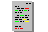

 Die Grundlagen
Anschlufl eines externen Verst‰rkers
Der Stereoausgang am (Mega)STE, TT030 und Falcon030
Telefone, Die Nachrichtentheorie
Interlaced Grafikmodus?
Die Centronics-Schnittstelle (Druckeranschlufl)
Der Unterschied zwischen PAL- und GAL-Chip
Das Anschluflkabel zum Modem
Der Unterschied beim DRAM (FPM, EDO und BEDO)
Verschiedene DRAM Bezeichnungen
4 Megabyte Speichererweiterung im Eigenbau
Die verschiedenen Typen von Schrittmotoren
Das Test- bzw. Diagnosekit von Atari
Klangverschlechterung durch Jitter
Die Einheiten der Technik
Die verschiedenen Batteriegrˆflen
Die zugelassenen Steckverbinder fÅE maximal 250 Volt
Die Anhebung der Netzspannung von 220 auf 230 Volt
 Erg‰nzendes Diskettenlaufwerke der Fa. TEAC
Erg‰nzendes Diskettenlaufwerke der Fa. TEACDiskettenlaufwerke der Fa. MITSUMI
Diskettenlaufwerke der Fa. MITSUBISHI
Diskettenlaufwerke der Fa. SONY
Diskettenlaufwerke der Fa. SAMSUNG
Vortex ATonce - DOS Emulator
Vortex HDPlus - Festplatte
Vortex Datajet - Festplatte
OverScan ST - Autoswitch OverScan ST Einbau
OverScan TT - OverScan TT030 Einbau
SCSI Hostadapter der Fa. ICD
SCSI Hostadapter der Fa. GE-Soft
SCSI Hostadapter der Fa. Protar
weiterbl‰ttern